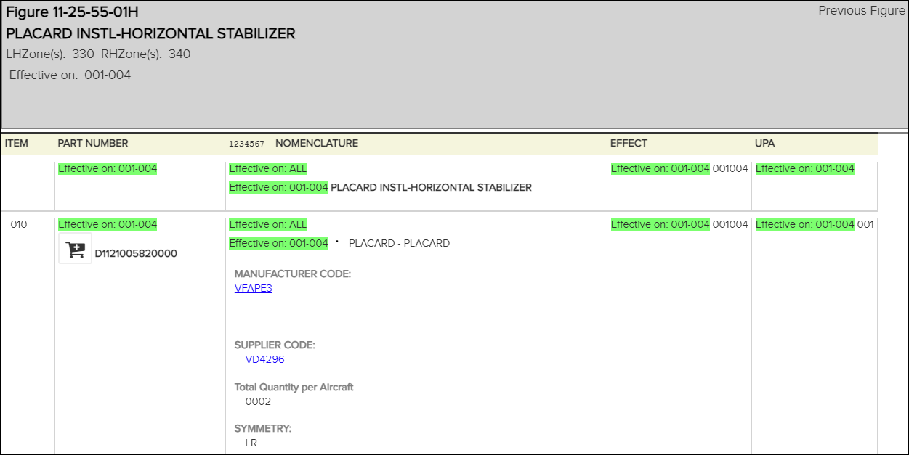
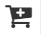

La fonction de panier de commande de pièces vous permet de sélectionner et de commander des pièces via une application tierce.
Les publications appartenant au dossier sélectionné apparaissent sous le nom du dossier.
La publication s'affiche dans le volet
Contenu.


du panier sous la pièce que vous souhaitez commander.L'application tierce configurée pour votre organisation s'affiche.